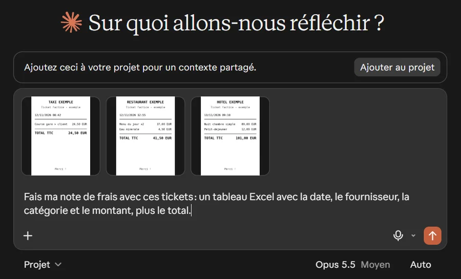
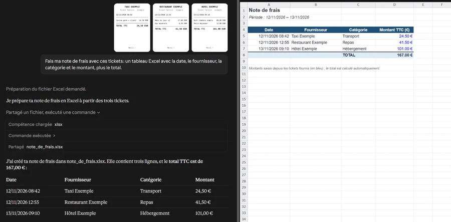
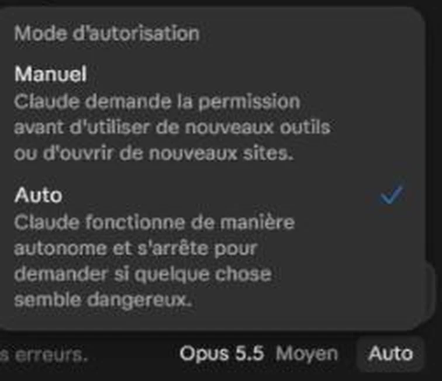

Un agent IA ne t'explique plus comment faire : il le fait. Tu donnes un objectif, il enchaîne les étapes et te rend un fichier fini.
Claude · ChatGPTOffre payante (dès Pro)3 captures annotées
1
C'est quoi ?
Un agent IA, c'est une IA à qui tu donnes un objectif au lieu d'une question. Elle découpe le travail en étapes et les enchaîne toute seule : chercher sur le web, lire tes fichiers, lancer du code, fabriquer un document… puis elle te rend un travail fini (un tableau, un rapport, une présentation). Chez Claude, cette fonction est née sous le nom de Cowork ; depuis la fusion, chat et Cowork ne font plus qu'un : tu confies une tâche depuis la même boîte qu'une conversation.
Un objectif, pas une question
Décris le résultat voulu (« Fais ma note de frais avec ces tickets ») : Claude choisit lui-même les outils et les étapes. Pas de mode à activer avant.
Même boîte que le chat
Des étapes visibles
Tu vois ce qu'il fait (compétence chargée, commande exécutée, fichier partagé) et le fichier s'ouvre à côté de la conversation, prêt à télécharger.
Web, ordinateur, mobile
Des sous-agents en parallèle
Pour un gros chantier, Claude découpe le travail et coordonne plusieurs sous-agents qui travaillent en même temps, chacun dans son propre contexte.
Tâches complexes
Ça tourne en ligne
Les longues tâches s'exécutent dans le cloud : tu peux fermer la page et suivre l'avancement sur ton téléphone. Les tâches qui touchent aux fichiers de ton ordinateur demandent l'appli de bureau ouverte.
Fichiers locaux : appli ouverte
Ce qu'il faut savoir (lu pour toi dans la doc)
✓Auto ou Manuel : c'est toi qui choisis. Sous la boîte de message, le mode d'autorisation propose Auto (Claude fonctionne de manière autonome et s'arrête pour demander si quelque chose semble dangereux) ou Manuel (il demande la permission avant d'utiliser de nouveaux outils ou d'ouvrir de nouveaux sites). Pour supprimer des fichiers, il te demande toujours d'Autoriser.
!Vérifie avant de lui confier le sensible. Anthropic le rappelle : un agent a accès à Internet et à tes fichiers, donc des risques à part. Relis toujours avant de laisser Claude gérer une tâche financière, personnelle ou critique.
€Ça consomme plus qu'un message. Une tâche d'agent enchaîne beaucoup d'étapes : elle use ta limite plus vite qu'une simple question. Garde-le pour le travail en plusieurs étapes qui finit par un fichier ; une question rapide reste une question.
⌂Codé par Claude, en dix jours. L'équipe d'Anthropic a construit Cowork en une dizaine de jours, et Boris Cherny, responsable de Claude Code, a indiqué que tout le code avait été écrit par Claude Code (Axios, VentureBeat, janvier 2026).
↓Il a fait trembler la Bourse. Le 3 février 2026, après la sortie des plugins métiers de Cowork (juridique, vente, finance…), Thomson Reuters a perdu environ 16 % en une séance (record) et LegalZoom près de 20 % (Reuters, CNN).
2
Comment ça marche
Sur claude.ai, l'appli de bureau ou mobile, avec une offre payante. Le déploiement de la boîte unique (chat + Cowork) se fait progressivement sur Pro et Max.
1
Écrire ta demande dans la boîte habituelle
Nouvelle conversation › Boîte de message
Ajoute tes fichiers avec le + (ici trois tickets de caisse factices), puis décris le résultat voulu : « Fais ma note de frais avec ces tickets : un tableau Excel avec la date, le fournisseur, la catégorie et le montant, plus le total. »

Une seule boîte : la demande, les fichiers, et le mode Auto en bas à droite.
2
Suivre les étapes et récupérer le fichier
Conversation › Étapes › Fichier à côté
Claude affiche ce qu'il a fait (compétence chargée, commande exécutée, fichier partagé) et ouvre le fichier à côté de la conversation. Télécharge-le ou demande une correction.

Les étapes à gauche, la note de frais Excel à droite, total calculé par formule.
3
Choisir le mode d'autorisation
Boîte de message › Auto › Manuel ou Auto
Clique sur Auto sous la boîte : Manuel pour valider chaque nouvel outil ou site, Auto pour le laisser avancer seul (il s'arrête si quelque chose semble dangereux).

Le menu « Mode d'autorisation » : Manuel ou Auto.
3
5 usages concrets
01
La note de frais
« Fais ma note de frais avec ces tickets. » Il lit chaque ticket, remplit le tableau et calcule le total.
Tickets→Agent→Excel
02
La veille concurrents
« Compare les offres de ces 4 concurrents et fais-moi un tableau avec les prix et les différences. » Il cherche sur le web, puis rédige.
Web→Comparatif→Tableau
03
Le dossier en vrac
Avec l'appli de bureau : « Range mon dossier Téléchargements par type et par date. » Il te demande avant de supprimer quoi que ce soit.
Fichiers locauxAutoriser
04
Le rapport du lundi
Avec tes connecteurs (mails, agenda, Drive) : « Résume la semaine et prépare le point d'équipe en slides. » À planifier chaque lundi.
Mails + agenda→Agent→Slides
05
La grosse recherche
« Fais une étude de marché sur les vélos cargo en France. » Il lance plusieurs sous-agents en parallèle, puis assemble un rapport.
Sous-agentsRapport
4
Les alternatives
Les grandes IA ont toutes leur agent, avec des noms différents.
Claude
Agent dans la même boîte que le chat (ex-Cowork), sous-agents, Auto / ManuelOffres payantes (Pro, Max, Team, Enterprise)
OuiWeb, ordinateur, mobile
Bon pour : confier une tâche sans changer de mode, voir les étapes et récupérer un fichier modifiable.
ChatGPT
Work (a remplacé le mode agent en juillet 2026)Offres payantes, sauf Free et Go
OuiWeb, mobile, appli de bureau
Bon pour : les tâches longues avec livrables, à choisir dans le sélecteur Chat / Work.
Gemini
Gemini agent (entreprises)Workspace et Gemini Enterprise, en aperçu
ProcheWorkspace, Gemini Enterprise
Bon pour : les entreprises déjà sur Google Workspace.
Notre verdict
QUESTION RAPIDEreste une question : pas besoin d'agent.
TÂCHE EN PLUSIEURS ÉTAPESconfie-la à l'agent, avec tes fichiers, et récupère un fichier fini.
TÂCHE SENSIBLEpasse en Manuel et relis avant de valider.
Rejoins les Repo-Potes
Chaque vidéo RepoPop Décode t'explique un sujet IA ou tech en moins d'une minute, avec sa fiche complète comme celle-ci.